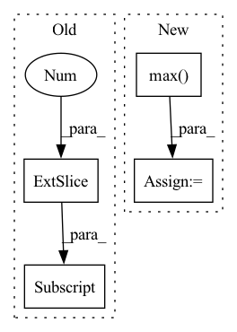

Pattern ID :6443

Before Change
min_angle=5.,
)
// Points are in this order: top left, top right, bot right, bot left
return (boxes[:, 0, 0] + 2 * boxes[:, 2, 1] / np.median(
np.linalg.norm(boxes[:, 2, :] - boxes[:, 1, :])
)).argsort()
return (boxes[:, 0] + 2 * boxes[:, 3] / np.median(boxes[:, 3] - boxes[:, 1])).argsort()
After Change
orig_shape=(1024, 1024),
min_angle=5.,
)
boxes = np.concatenate((boxes.min(1), boxes.max(1)), -1)
return (boxes[:, 0] + 2 * boxes[:, 3] / np.median(boxes[:, 3] - boxes[:, 1])).argsort(), boxes
def _resolve_sub_lines(self, boxes: np.ndarray, word_idcs: List[int]) -> List[List[int]]:
In pattern: SUPERPATTERN
Frequency: 3
Non-data size: 4
Instances
Fragment ID: 22355796
Project Name: mindee/doctr
Commit Name: 1dc33749c4dda6645031f57e549c2408e7ba4365
Time: 2021-12-29
Author: charles@mindee.co
File Name: doctr/models/builder.py
M Class Name: DocumentBuilder
N Class Name: DocumentBuilder
M Method Name: _sort_boxes(1)
N Method Name: _sort_boxes(1)
M Parent Class: NestedObject
N Parent Class: NestedObject
M File Name: doctr/models/builder.py
N File Name: doctr/models/builder.py
M Start Line: 54
M End Line: 64
N Start Line: 57
N End Line: 64
'>
Before Change
image_from_tuple = ddpm(generator=generator, num_inference_steps=2, output_type="numpy", return_dict=False)[0]
image_slice = image[0, -3:, -3:, -1]
image_from_tuple_slice = image_from_tuple[0, -3:, -3:, -1]
assert image.shape == (1, 32, 32, 3)
expected_slice = np.array(
[1.000e00, 5.717e-01, 4.717e-01, 1.000e00, 0.000e00, 1.000e00, 3.000e-04, 0.000e00, 9.000e-04]
After Change
expected_slice = np.array(
[1.000e00, 5.717e-01, 4.717e-01, 1.000e00, 0.000e00, 1.000e00, 3.000e-04, 0.000e00, 9.000e-04]
)
max_diff = np.abs(image_slice.flatten() - expected_slice).max()
self.assertLessEqual(max_diff, 1e-3)
@slow
'>
Fragment ID: 22355789
Project Name: huggingface/diffusers
Commit Name: 02d83c9ff1b93f2c6f9c94f9369b3e4bc1ba8ce7
Time: 2022-12-06
Author: anton@huggingface.co
File Name: tests/pipelines/ddim/test_ddim.py
M Class Name: DDIMPipelineFastTests
N Class Name: DDIMPipelineFastTests
M Method Name: test_inference(1)
N Method Name: test_inference(1)
M Parent Class: unittest.TestCase,PipelineTesterMixin
N Parent Class: unittest.TestCase,PipelineTesterMixin
M File Name: tests/pipelines/ddim/test_ddim.py
N File Name: tests/pipelines/ddim/test_ddim.py
M Start Line: 46
M End Line: 68
N Start Line: 61
N End Line: 77
'>
Before Change
ignore_bboxes_inds = torch.nonzero(
ignore_max_overlaps > self.ignore_iof_thr).squeeze()
if ignore_bboxes_inds.numel() > 0:
overlaps[ignore_bboxes_inds[:, 0], :] = -1
assign_result = self.assign_wrt_overlaps(overlaps, gt_labels)
return assign_result
After Change
else:
ignore_overlaps = bbox_overlaps(
gt_bboxes_ignore, bboxes, mode="iof")
ignore_max_overlaps, _ = ignore_overlaps.max(dim=0)
overlaps[:, ignore_max_overlaps > self.ignore_iof_thr] = -1
assign_result = self.assign_wrt_overlaps(overlaps, gt_labels)
return assign_result
'>
Fragment ID: 22355802
Project Name: wxinlong/solo
Commit Name: 801c8b19931fb40774eda6dbb6917b6d1085ce8a
Time: 2019-02-13
Author: chenkaidev@gmail.com
File Name: mmdet/core/bbox/assigners/max_iou_assigner.py
M Class Name: MaxIoUAssigner
N Class Name: MaxIoUAssigner
M Method Name: assign(5)
N Method Name: assign(5)
M Parent Class: BaseAssigner
N Parent Class: BaseAssigner
M File Name: mmdet/core/bbox/assigners/max_iou_assigner.py
N File Name: mmdet/core/bbox/assigners/max_iou_assigner.py
M Start Line: 72
M End Line: 84
N Start Line: 75
N End Line: 90